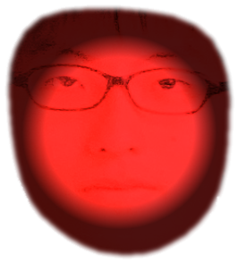

— FPS
no-clip →
— featuring HARUKI —
壁の向こうに"カレ"が待っている...
THE BACKROOMS — featuring HARUKI © 2026
ver 8.0 (SVG icons + boss phases + chase banner + outdoor sky)
JS ?
— / —
— / —
★ 全資料を集めて HARUKI を倒すと、TRUE END に到達する。
— / —
— / —
— / —
スロット毎に独立したセーブ。名前を付けて家族や友達と分けて遊べる。
※ 実績・図鑑・アーカイブは全スロット共通。
接続: 未接続
押下中ボタン: -

— 祈りを捧げますか？
🪙 所持: 0
★ ユニーク品は1日1点のみ並びます
— ENTERING —
THE LOBBY
LEVEL 0
THE LOBBY
no-clip 中...
バックルームに飲まれた...
ESCAPED
プレイしていただき
ありがとうございました
LEVEL 0
THE LOBBY
🪙 0
00:00:00
クリア: 0 / 6 階層
R1 でゲーム中にモード切替。所持品から選択。
所持アイテムなし
所持武器なし
タップで詳細・使用
LEVEL 0 / THE LOBBY
まだ何も記録されていない。
接続: 未接続
割当ボタンをタップ → ゲームパッドのボタンを押すと登録される
アイテム発見
アイテム名
左スティック：移動
右スティック：視点
赤ボタン：調べる / 拾う / no-clip
右上のスマホ：ステータス・アイテム・マップ・記録・設定
両スティック同時：ダッシュ (スタミナ消費)
武器：拾うと自動装備。
左下十字キー：武器スロット切替。
右下青ボタン：装備武器で攻撃。
画面中央のレティクルが照準。
視線を合わせて青ボタンを押せ。
ゲームパッド：L1 で武器/アイテム切替、R1 で武器使用。
壁にめり込むと別の階層に飛ばされる。
HP / SAN を維持し、no-clip 地点を探せ。
追跡されたら光源で抑えるか、視線を切れ。
クリア済みのレベルを選んで再プレイ
説明文
説明文
D-pad / 十字キーに割当
— 未割当
アチーブメント解除